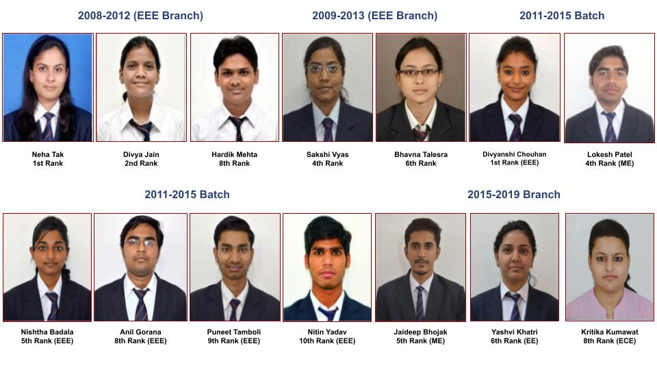

It is not academics all the time at Techno NJR campus. Year round there are seminars, workshops, presentations , debate and other events like Tech Jalsa, Phoenix and Sports week which are organised with active participation of student volunteers. This inculcates team spirit and leadership qualities in students. Most festivals like Holi, Diwali, Garba etc are celebrated at campus to bring in a sense of brotherhood among students.
Techno Ariston, Toastmaster Club formed by students of Techno NJR is one of the two Toastmaster clubs in Udaipur- other being at IIM, Udaipur. There are 35 active members of the club who organise regular meetings which help them develop confidence and presentation skills. Members of the club have participated at district and regional level Toastmaster club meetings.
Techno NJR is an AIESEC partner. AIESEC is an international non-governmental not-for-profit organization that provides young people with leadership development and cross-cultural global internship and volunteer exchange experiences across the globe, with a focus to empower young people so they can make a positive impact on society. The AIESEC network includes over 100,000 members in 126 countries and territories. It is the largest youth-run organization in the world.
Techno NJR has one of the biggest IEEE-CS students chapter in Rajasthan with 65 members. Chapter keeps on organising various conferences, workshops, seminars and has been host to Presidents of IEEE Computer Society. Two students have already won best student prize of US$ 1000 each from IEEE Upsilon pi Epsilon.
Techno NJR has its own Rock Band G.A.M. and an active music club. There is a dedicated Music Room for these activities and band has earned accolades by performing at various events.
Academics occupy top position in the scheme of education at Techno NJR. It is one of the few colleges in RTU which maintain around 90% pass in all semester results. Techno NJR has found place in RTU Merit list from its first batch onwards.
